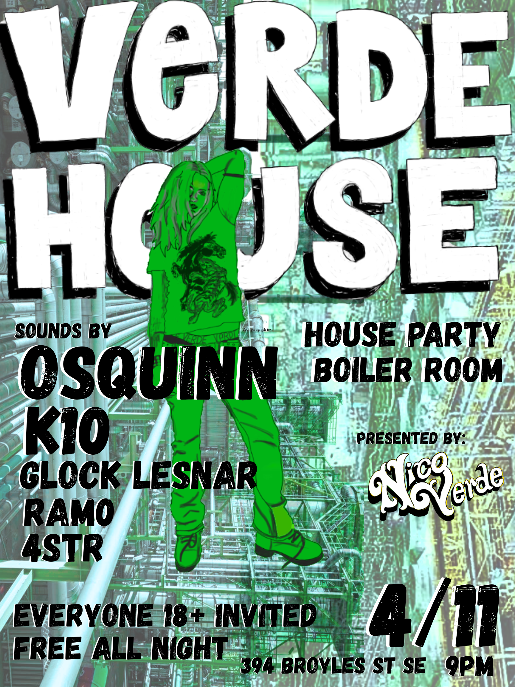

Event Launch · Creative Direction
A sold-out house party I built from a positioning insight, not a venue booking. I identified a gap in how Atlanta nightlife was being marketed, built the brand, ran the go-to-market alone, and turned a single night into a repeatable content engine.

{{ block.label }}
{{ block.body }}
TK: {{ block.tk }}
The Execution
The organic content that built demand ahead of the door opening.
What People Said
“{{ t.quote }}”
{{ t.name }}